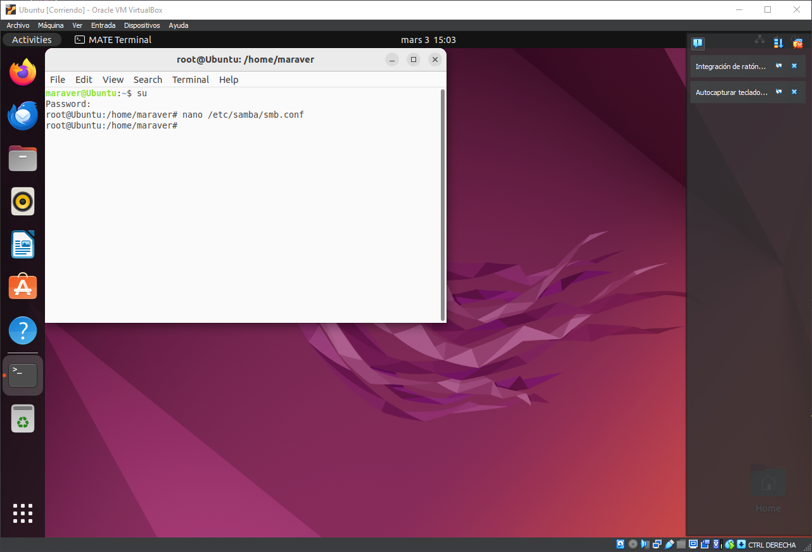
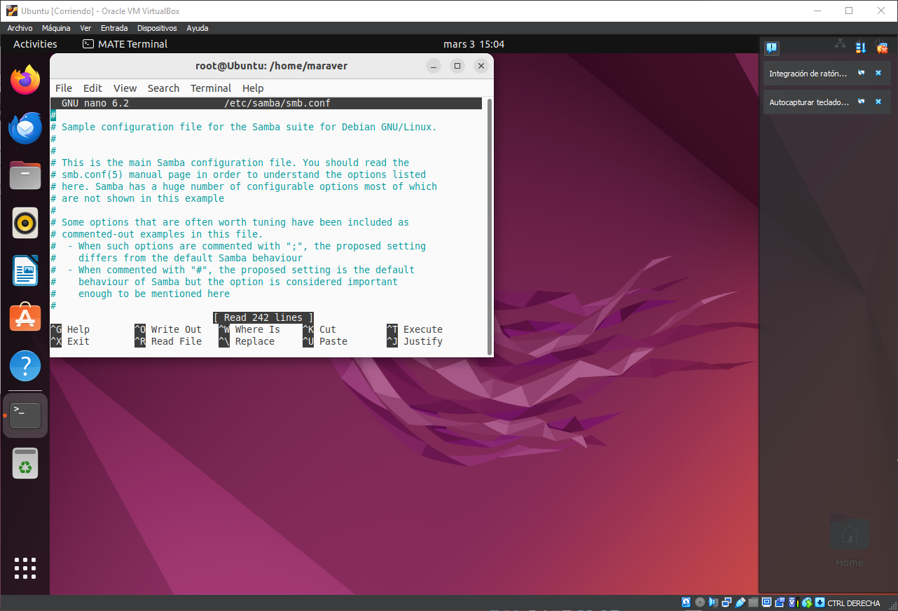
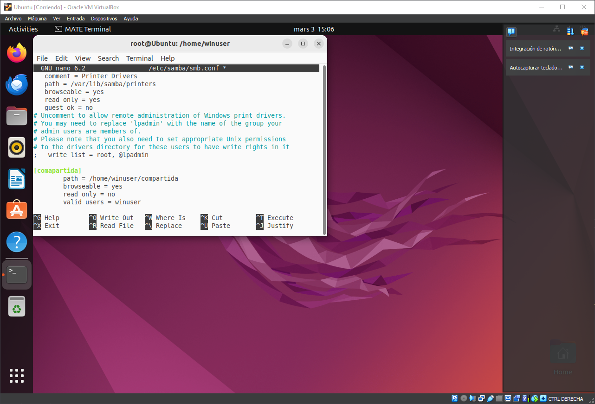
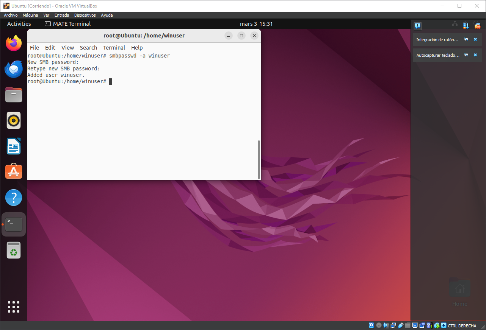
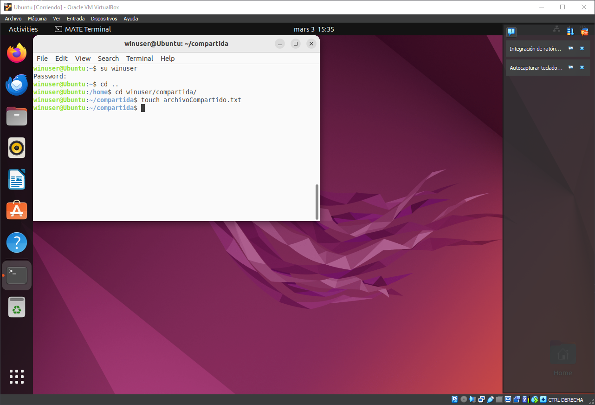

Configuración de Samba
Para poder compartir la carpeta creada con la maquina virtual de windows debemos introducir una serie
de lineas en la configuracion de samba.
Para esto accederemos como administrador en la terminal e introduciremos
> nano /etc/samba/smb.conf


Esto nos abrirá un editor de texto el cual contiene la configuracion de samba y en el cual deberemos
bajar al final del todo e introducir esto:
● [Compartida]
o path = /home/winuser/compartida
o browseable = yes
o read only = no
o valid users = winuser

Y saldremos pulsando CTRL+X y guardando.
Ahora vamos a añadir el usuario winuser a los usuarios de samba y vamos a asignarle una contraseña.


Ahora debemos acceder al usuario winuser y crear un archivo en la carpeta que hemos creado anteriormente
con el comando:
> touch nombreArchivo